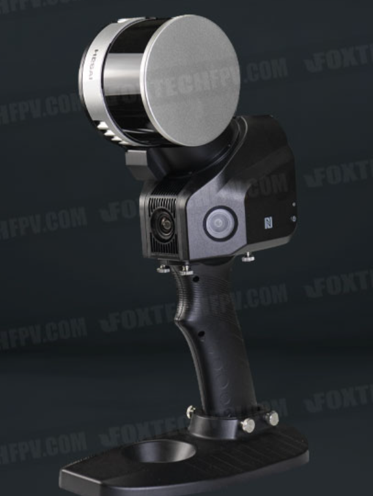

LiDAR which stands for ‘Light Detection And Ranging’ is a remote sensing & surveying technology that measures distance by illuminating a target with a pulsed laser light. These light pulses combined with other data recorded by suitable Mapping systems generate precise, three-dimensional information about the shape of the Earth and its surface characteristics. LiDAR mapping, sometimes referred to as ‘3D laser scanning’ is popularly used as a technology to make high-resolution maps, with applications in geodesy/ geomatics, with terrestrial, airborne & mobile mapping methods
